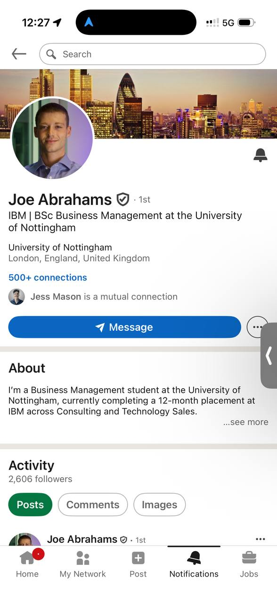

Take the free 2-minute assessment and get an instant scored report with actionable recommendations.

Generating your personalised AI readiness report...
Here's where your organisation stands — and what to do next.
Get a personalised roadmap tailored to your organisation's unique position and goals.
Book a Free Strategy Call with JoeHelping businesses unlock the power of AI